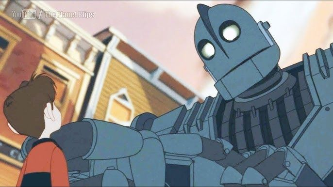
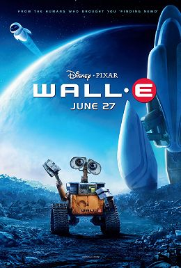
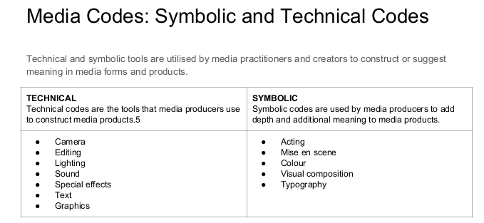

The Iron Giant (1999)
Directed by Brad Bird
Art director: Alan Bodner
"Set during the Cold War in 1957, the film centers on a young boy named Hogarth Hughes, who discovers and befriends a giant alien robot. With the help of a beatnik artist named Dean McCoppin, Hogarth attempts to prevent the U.S. military and Kent Mansley, a paranoid federal agent, from finding and destroying the Giant."
My Notes
The Iron Giant is structured, as a similar build of what I want to convey.
The robot has a change of ways and knows the destruction it could cause yet does acts of sacrifice just for the saviour of others, rather than for self-preservation.
The Iron Giant contains Similar themes of sacrifice, robotic/machinery, change, and changing fate.
Key things that I want to convey in my work that helped compliment the more emotional-based message.
The Iron Giant
can be seen as a three-act structure—a beginning, a middle, and an ending.
The Iron Giant could be seen as a hero journey-type storyline, The giant is brought to the world with an original mission, and once showing up there, it does not have the same goals, its reluctant to this world, but through meeting a boy and the boy's determination to assist, the robot go through journeys of the physical and mental kind as the robot and boy evade the man who aimed for the robot to be destroyed hunting it down, until returning to the town to be faced with a dilemma of a missile aiming for the town where the robot though an act of sacrifice, chose to take the missile away from the town, getting blown up in the process.
the climax being that sacrificial decision.
The resolution was that the robot was still alive but scattered across the world.

Wall- E (27 June 2008)
(3d animation)
Directed by Andrew Stanton
Produced by Jim Morris
Written by Stanton and Jim Reardon
Art directors: Ralph Eggleston, Bert Berry, Anthony Christov
My Notes: The film, shows a general connection to the story I wish to convey, as it includes similar type elements, such as the Robot and Plant. so it drew my attention. (colours, sound, expression)
Audience review: The film is a dearly loved movie and provides, a Messager that poses eye-opening towards the audience.
Containing themes of nature, robotics/machinery, sacrifice, change, decay and life.

My notes
Audience reception:
WALLE is a well-beloved movie, that comments on the future of man with the destruction of the planet and laziness. it is a well-received and dearly loved film.
how I am inspired by and how it will be used in my media:
The scene when WALLE discovers the plant for the first time is a turning point for them.
I find the glitch that WALLE has and this turning point a great interest and inspiration towards My film. I want to have a scene of discovery for my main character. where you start out looking at the plant with the character blurred, before the focus changes to see the character looking at it.
The movie contains elements of growth and change while contributing a mix of sci-fi and nature.
Narrative structure. (science fiction)
Walle can be seen as a three-act structure—a beginning, a middle, and an ending.
We are introduced to Walle who drives through a destroyed earth as it does its job. (setting scene/setting timeline) A destroyed and trash-covered lifeless earth as a result of humans' constant polluting actions, leading them all to head to space and let robots do all the cleanup work, basically abandoning Earth.
something new happens, attaching him to a new goal, (Meeting EVE and EVE getting taken to the spaceship) Walle no longer wants to be lonely and goes after her.
Walle is faced with a new dilemma, the ship does not want the sign of life protocol causing Walle and EVE trouble, causing Walles's new goal to be to get the plant to the protocol to complete his original goal of staying with EVE and to no longer be lonely.
The climax is the scene where Walle is getting squished to put the plant in, and EVEs rush to save him back in his The resolution being that the captain and humans return to clean up the earth and grow new plant life.
This movie has a say on human behaviour and laziness in correlation to the destruction of our planet.
What message/story will your product convey?
I want to pose this idea of change and desire for change, using the elements of Nature and growth. The idea you are not forced to follow a predetermined path nor are you obligated to follow the same steps as those before you.
I want it to focus on the development of technology as well as the idea that nature overpowers.
In today's society, technology continues to grow and evolve day after day, But when will it be enough? When the world is dying and robots are all that's left? What purpose are we? to create for destruction? faults help us grow but what use are they if we fail to learn from history and think of the future? Would there even be a future if we continue that path? These are questions I grow through each day as I watch out world die all for the construct of "improving", this being more evident as an Artist who is afraid of having my love stomped on by the development and growth of AI.
Humans have a selfish way of not seeing a problem unless it actively affects them. A future of dull machinery as this beautiful planet withers and dies, is not a future I want anyone to have the misfortune of suffering. We don't need to follow the same steps as those before us.
What codes and/or conventions will you use to convey a message?
Codes
Colour: is a very key aspect, I want to use a progression of colours to display the emotion of the scenes, a progression of dull to light. great examples of this can be found in the Colour section of Media Froms
Colour can be used to convey the emotions i want people to experience in specific scenes.
Sound: I want the visuals to speak volumes over the sound. I may have aspects of suspense when I get into the storyboarding. (depends on time constraints) My idea of sound, is I don't want it to overshadow the visuals, I want to show my message not tell it, so I don't want to use dilogy but i may use sound effects and light background noise as I don't want it to be completely silent.
Conventions
The way it is structured seems like a robot vs nature, change or nature fantasy Hero's journey of sorts.
Basic and summarised structure of the Polt
The robot has a change (most likely notices a leaf and is confused) and decides to change its fate and discover the world outside.
It experiences the outside world coming to love it (Simple shots outside). It comes across an area that holds the off button to all machines (like a AI kill switch) It hesitates.
It has a montage of all the horrid things robots have caused and continues to do. It makes the choice to hit the kill switch, as it knows the planet is dying.
Cut to black after suspenseful or wary music in the lead-up to pressing the button.
You hear birds and nature before it fades back out of black to the shutdown overgrown shell of the robot. a flower blossoms.
END
(Science fiction/Heros journey, as there is that original hesitation to leave on a journey, but the ending out be a bit different to Heros journey as there is no return to the beginning, more a return to the reality of the robotics, allowing the robot to make a choice)
Discuss how you will structure time in the delivery of your product’s narrative? What effect will this have on your audience’s engagement and reading of your product?
We are living within if the age of rapidly developing technology and we are both continuously developing technology, while also becoming more environmentally aware, an Ironic mix. Due to the day and age, we live in where nature and the development of technology are large talking points, I want to pose questions about our development of technology, I want people to think about the questions I have asked. Where does this end? At what point are we pushing the boundaries of what necessarily we can create technology but what we should?
Codes

Conventions

MEDIA requirements
DELETE THIS BEFORE YOU SUBMIT YOUR GOOGLE SITE
What message will your product convey? What do you want your product to “say”? This can be implicit (suggested, indirect) or explicit (clear, direct). Remember, your product needs a “backbone” or it will be meaningless, empty. Why should the audience care?
2. Explore at least TWO media products with a narrative based around the same message/theme. This might exist in media forms other than what you are producing.
3. From the products that you have consumed, identify ways in which structural and/or aesthetic qualities have been used to deliver meaning.
○ Describe specific examples with images, screenshots, or descriptions of audio codes.
4. Evaluate how you plan to structure meaning in your narrative:
○ What codes and/or conventions will you use to convey a message?
5. Discuss how you will structure time in the delivery of your product’s narrative? What effect will this have on your audience’s engagement and reading of your product?
Remember to cite each source (title, artist, link, date accessed)